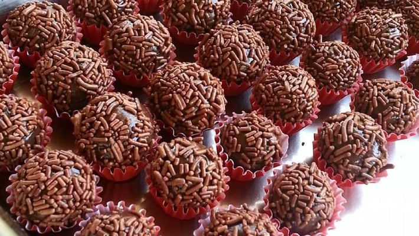

Brigadeiro
Ingredientes:
- 1 caixa de leite condensado;
- 3 colheres de sopa de achocolatado, ou cacau em pó;
- 1 colher de sopa de manteiga (sem sal).
Modo de Preparo:
- Misture os três ingredientes;
- Mexa a mistruta (em fogo baixo) até você conseguir ver o fundo da panela.